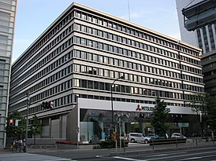

«Міцубісі» (Mitsubishi) - одна з найбільших японських корпорацій, що спеціалізується на випуску автомобілів. Відділення «Міцубісі Моторс» (Mitsubishi Motors), штаб-квартира якого знаходиться в Токіо, входить до складу підрозділу важкої промисловості (Mitsubishi Heavy Industries).
